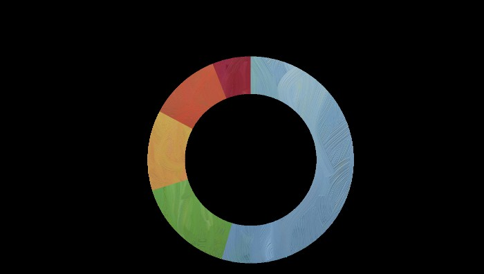
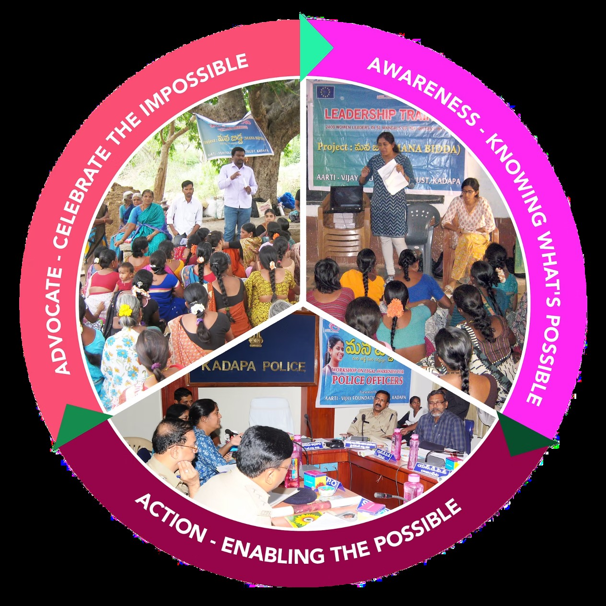

Impact
"Anna ki Attu, Naaku Thittu..."
A Telugu folk song where a girl speaks about going hungry while her brother gets the best of the food — a metaphor for generations of gender inequality.
Discrimination is a way of life — in thoughts, actions, and most importantly emotions. Cultural conditioning has resulted in women devaluing themselves, and this is passed on from generation to generation. Ending this discrimination is a difficult task because society — and even the women themselves — continue to accept the current situation as normal.
With immense effort over 30+ years, we have made significant progress.
Our Reach
Rights education at scale
with rights education
& Abhaya
in Abhaya Project
in Manabidda
in Manabidda
in Abhaya
members (Abhaya)
sensitised
trained
MHM (Flipkart Project)
Childline program
Our Work
How we drive change
Awareness is the key driver of change
Many communities in and around Kadapa lack access to basic information about women's rights. They have only seen daughters as a burden, families crushed by dowry debt, and women enduring violence without recourse. The absence of information about their rights, facilities, and health services available to them makes them helpless and dependent.
Keeping this in mind, we concentrate on outreach programs to educate communities. We believe the future lies in the value system of the next generation.

Our Intervention
"If we can positively impact the way men think about women and women think about themselves, we can bring about a lasting change."
Through the Manabidda and Abhaya projects, we work directly with village communities, schools, colleges, and health workers — holding workshops, forming coalition groups, and training front-line professionals to recognise and respond to gender-based discrimination.

Revati's Story
Revati attended one of our village awareness sessions and came forward to share her experience of domestic violence. With the support of our team and a newly formed coalition group, she accessed legal aid, moved to safety, and has since become a vocal advocate in her own community — training others in the coalition and speaking at schools.
Revati's story is not unusual. Across our programs, women who receive information and support become advocates themselves — multiplying the impact of every session we run.
In Her Own Words